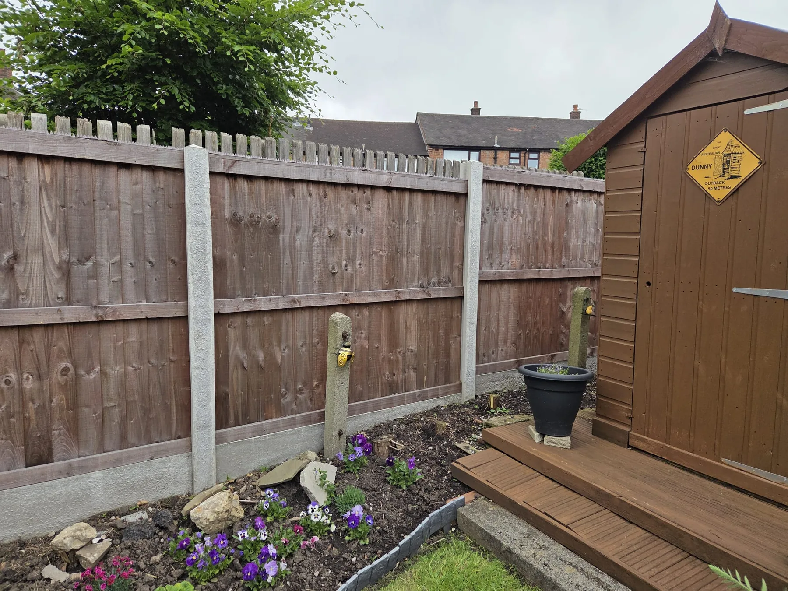

Driveways & block paving
Cut through built-up grime, algae and traffic film to reveal a brighter, cleaner and more consistent finish.
Get a quote →Bring tired outdoor surfaces back to life with detail-led exterior cleaning and restoration. Domestic or commercial, from a professional clean to full restoration work, we match the service to the site and the finish you need.
Commercial cleaning enquiries welcome — from individual premises to larger exterior areas and managed sites.
We assess the surface, recommend the right level of treatment and give you a clear route from tired and weathered to clean, restored and protected.
Cut through built-up grime, algae and traffic film to reveal a brighter, cleaner and more consistent finish.
Get a quote →Restore colour and definition to patios and pathways affected by weathering, dirt and organic growth.
See results →Refresh high-traffic steps and entrances for a sharper, cleaner first impression.
Book an estimate →Controlled exterior cleaning for decking and outdoor areas, with the method matched to the surface.
Ask about your job →High-pressure drain jetting to help clear stubborn build-up and restore flow in suitable domestic external drain lines.
View drain cleaning →Professional exterior cleaning for business premises, forecourts, yards, communal areas, managed properties and larger sites.
Commercial enquiries →Start with the level of finish you want. We confirm the final fixed quote after seeing photos, surface condition, access and approximate area.
For exterior surfaces that need a professional reset and a visibly cleaner finish.
Our hero package for block paving and tired exterior surfaces needing a deeper restoration.
For customers who want the full transformation plus a protective sealed finish where the surface is suitable.
OCD Services supports commercial premises and managed properties across Preston and Lancashire. From one-off deep cleans to larger exterior areas, send us the site details and we will arrange the right scope and quotation.
Domestic external drain cleaning and high-pressure drain jetting for stubborn build-up and restricted flow. Send us the problem, your postcode and any photos you have, and we’ll confirm whether the job is suitable for our equipment.
WhatsApp us 2–3 photos, your postcode and a rough idea of the area.
We recommend Clean, Restore or Protect and confirm the scope and price.
We arrive prepared, complete the agreed service and leave the area tidy.
Drag the lime button directly across the photo to reveal the before and after result. Tap Next Photo to move through the transformations.


Send us 2–3 photos and your postcode. We’ll tell you the most suitable option and what the next step looks like — no obligation.
Mobile exterior cleaning in Preston and surrounding Lancashire area. Send your postcode and a few photos and we’ll confirm availability and provide a clear quote.

Clear information reduces surprises. Final scope depends on the surface, access and condition, so we confirm the job before work starts.
Send 2–3 clear photos, your postcode and an approximate size on WhatsApp. For larger or commercial sites, we may recommend a site visit before confirming scope.
OCD Clean is the professional reset, OCD Restore adds deeper restoration and re-sanding where required, and OCD Protect adds sealing where the surface is suitable. We’ll recommend the right level after seeing the job.
Yes. We welcome commercial exterior-cleaning enquiries across Preston and Lancashire, including premises, forecourts, yards, communal areas and managed properties.
No. OCD Drain is quoted separately because access, blockage type and suitability for jetting vary from job to job.
We aim to agree the scope and price before work begins. If site conditions reveal something materially different from the information provided, we discuss it with you before carrying out additional work.
For the quickest quote, send 2–3 photos, your postcode and approximate area on WhatsApp. We’ll advise which package fits the job and confirm the next step.